Founded in 1998 at the Department of Animal Science of ESALQ/USP, the Forage Quality and Conservation Group (QCF) has established itself as a global reference in ruminant nutrition and forage preservation. Under the leadership of Prof. Dr. Luiz Gustavo Nussio, the group focuses on the complex biological and chemical processes involved in silage and hay production.
Our infrastructure includes state-of-the-art laboratories for physico-microbiological characterization and high-performance chromatography (HPLC), alongside experimental stations that allow for real-world validation of forage additives and aerobic stability.
The QCF is the founding organizer of the International Symposium on Forage Quality and Conservation (ISFQC). The first edition was held in 2009, followed by successful biennial editions until 2019.
A major milestone in our history occurred in 2015, when the IV ISFQC was held jointly with the XVII International Silage Conference (ISC), marking a historic collaboration that brought the global silage research community to Brazil.
✨ After a hiatus, we are proud to announce that the symposium is returning in 2026 for its VII edition, continuing our mission to advance sustainable livestock systems through superior forage management.
Today, the QCF comprises a diverse team of post-doctoral researchers, PhD and Master’s candidates, and undergraduate students, all committed to excellence in research and education.
Professor at ESALQ-USP
Postdoctorate at ESALQ-USP
PhD candidate at ESALQ-USP
PhD candidate at ESALQ-USP
M.Sc. student at ESALQ/USP
Undergraduate – ESALQ/USP
Undergraduate – ESALQ/USP
Undergraduate – ESALQ/USP
Undergraduate – ESALQ/USP
Undergraduate – ESALQ/USP
Undergraduate – ESALQ/USP
Undergraduate – ESALQ/USP
Undergraduate – ESALQ/USP
Undergraduate – ESALQ/USP
Moments from our research activities, field days, and laboratory work.

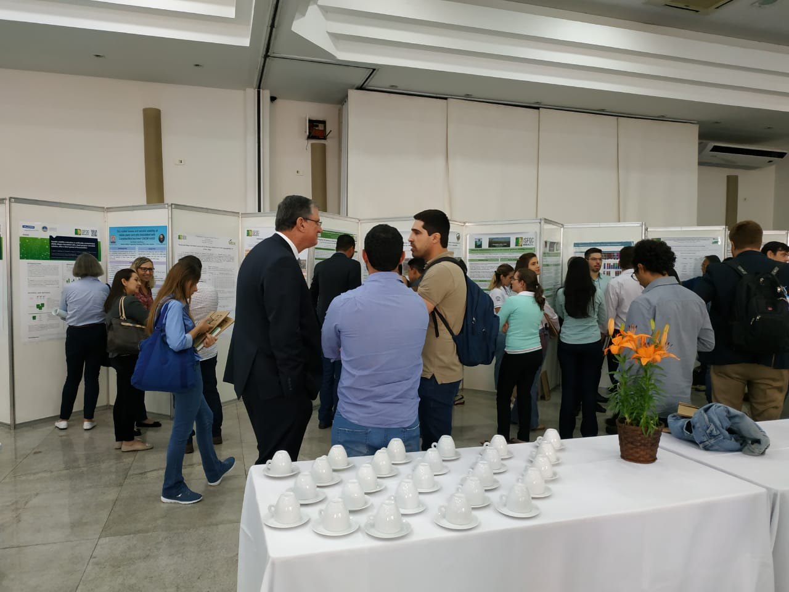
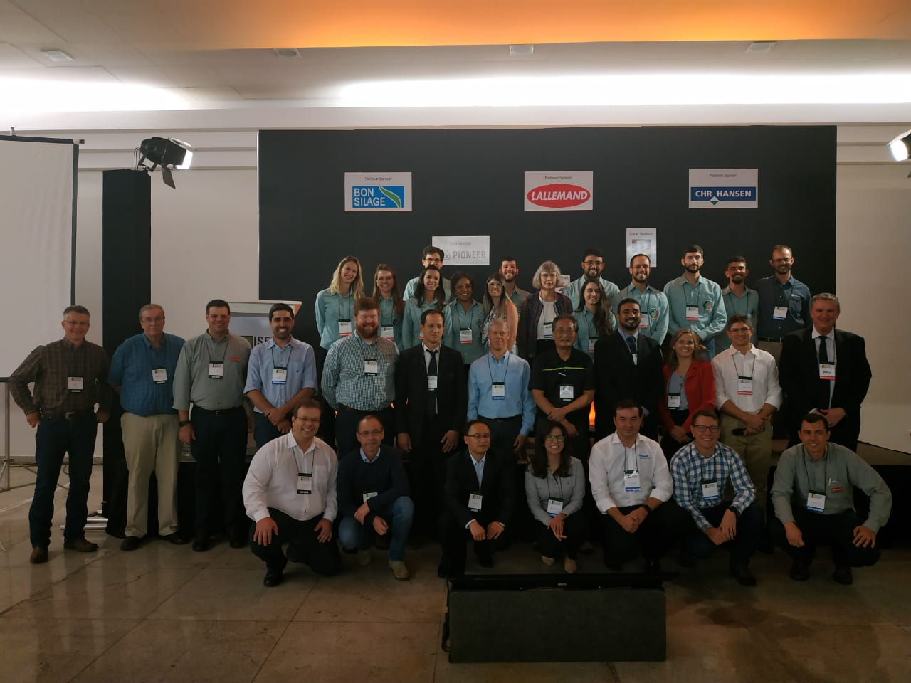
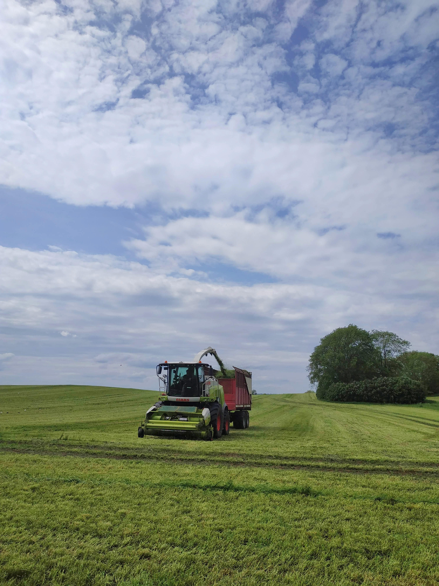
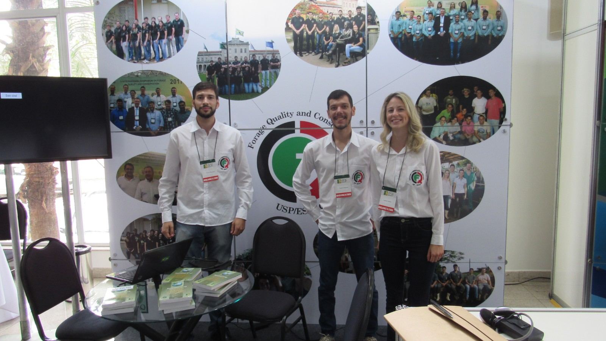


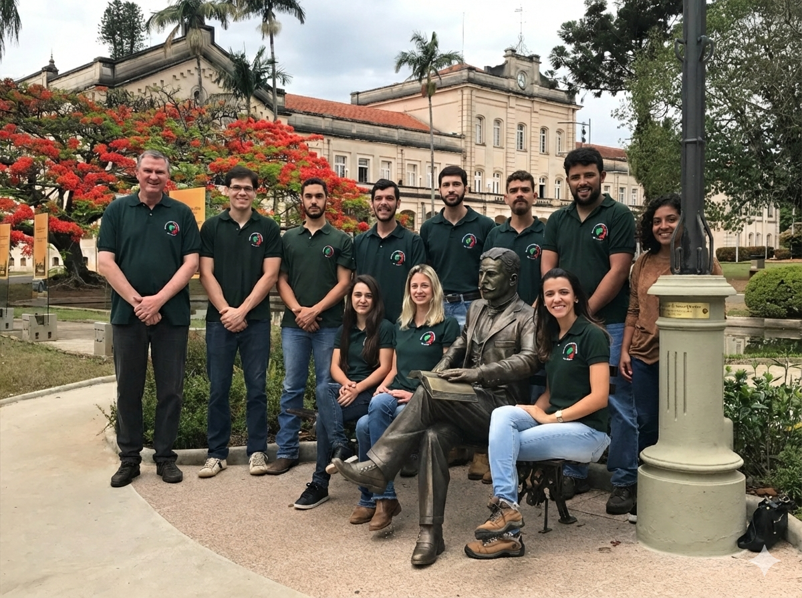

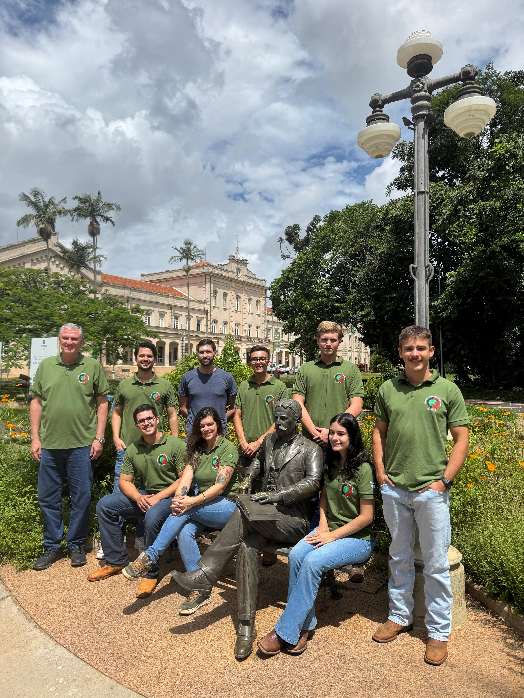

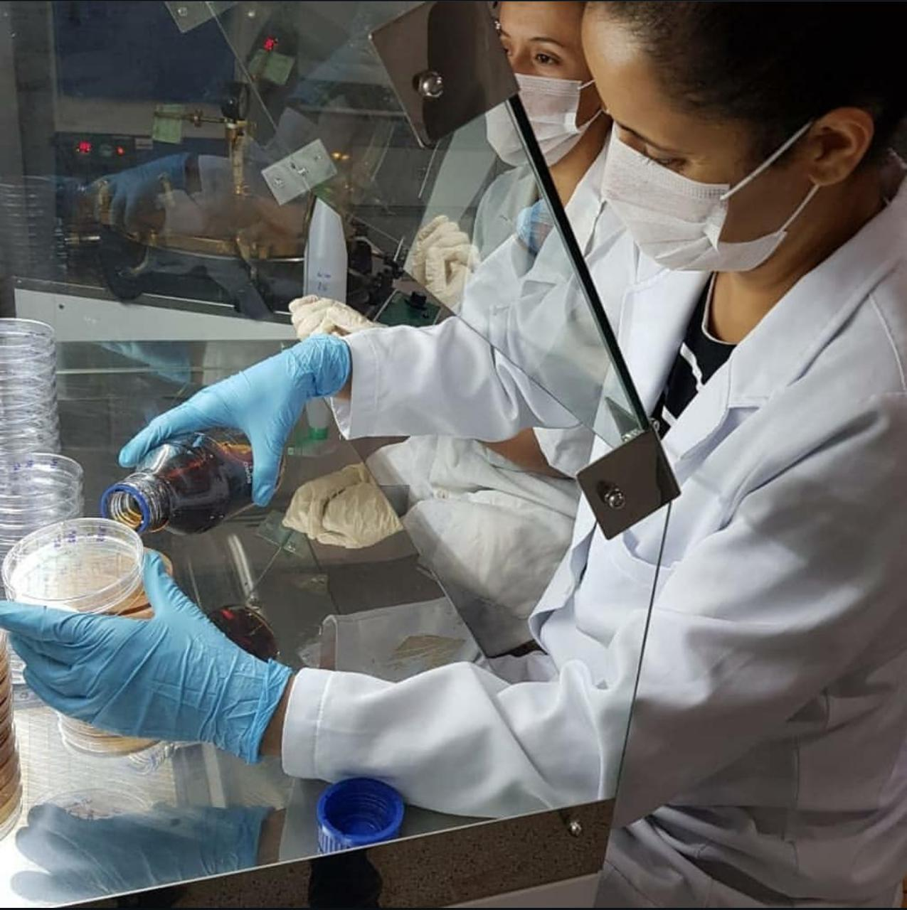
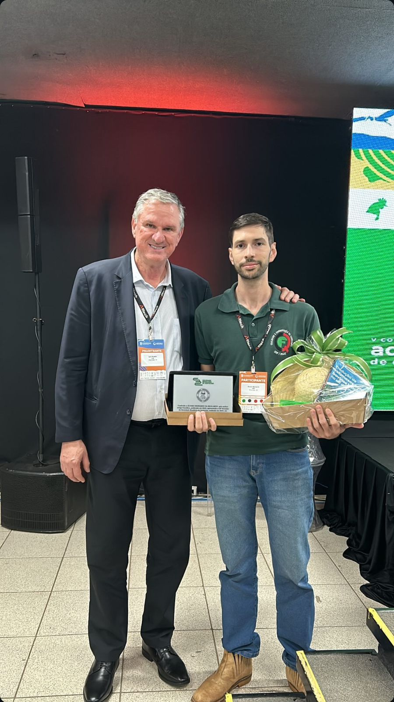
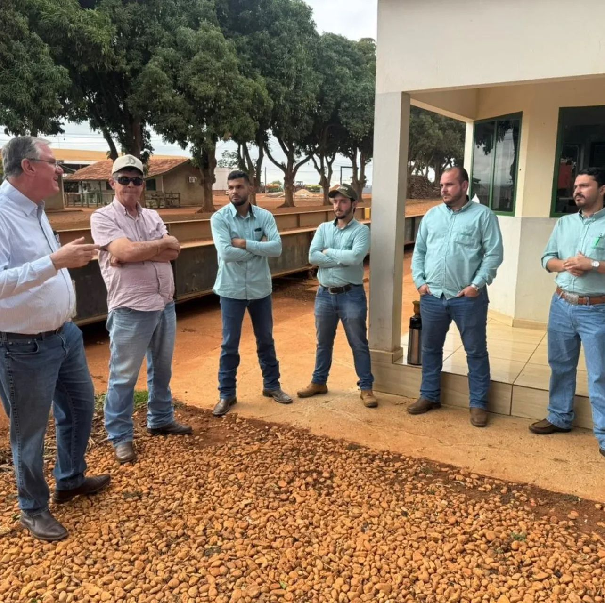
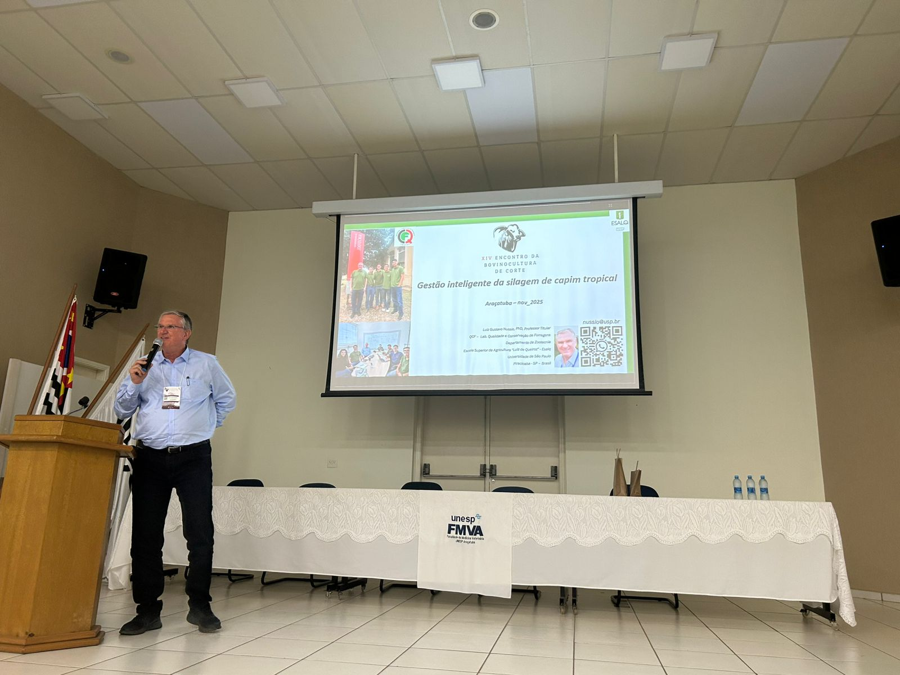
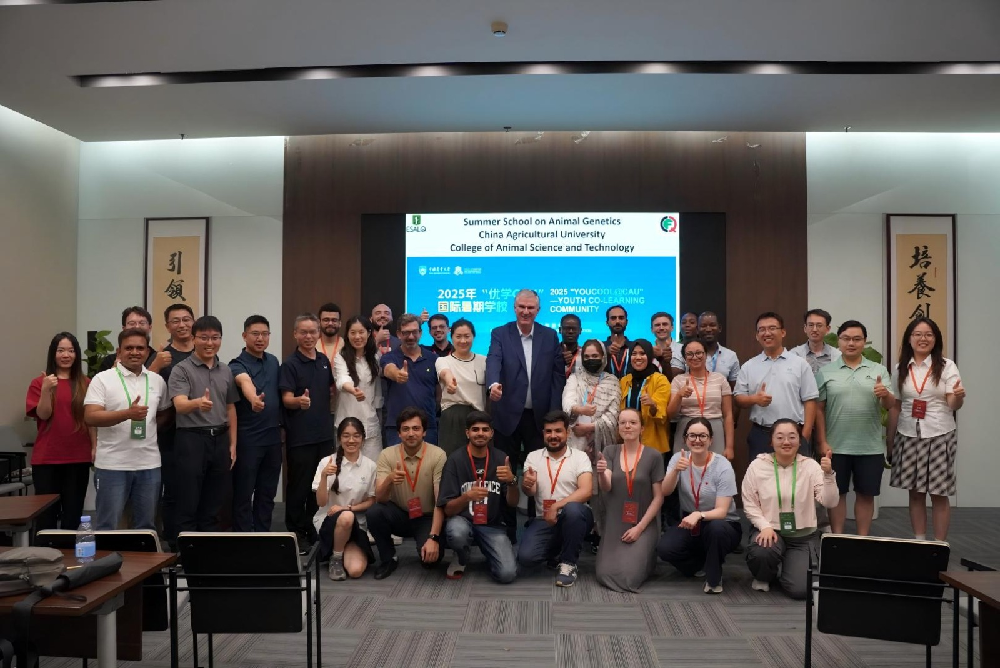
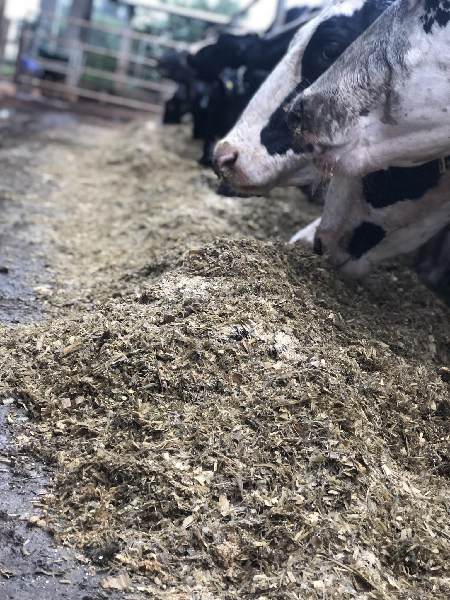